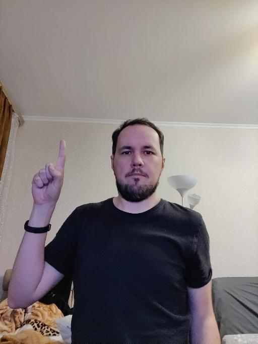
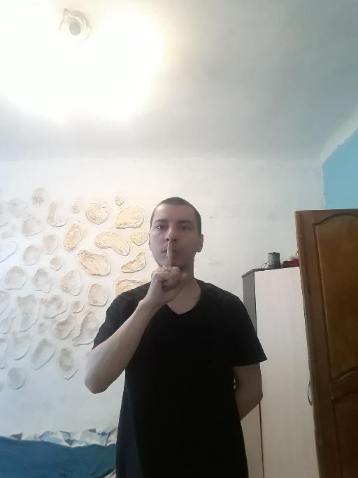
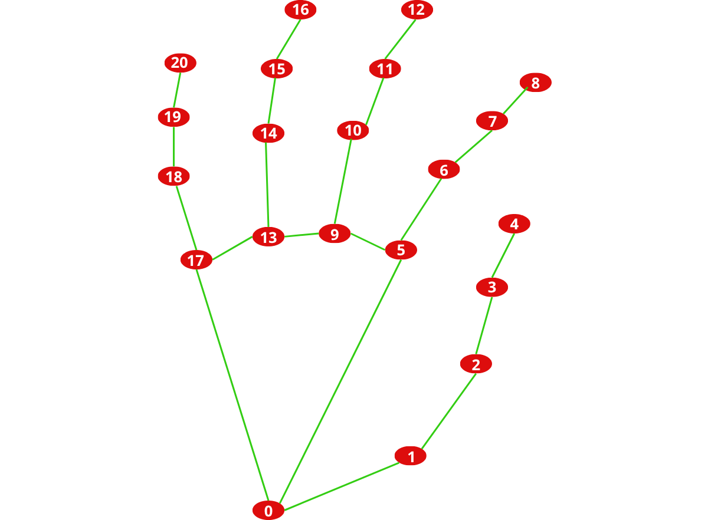
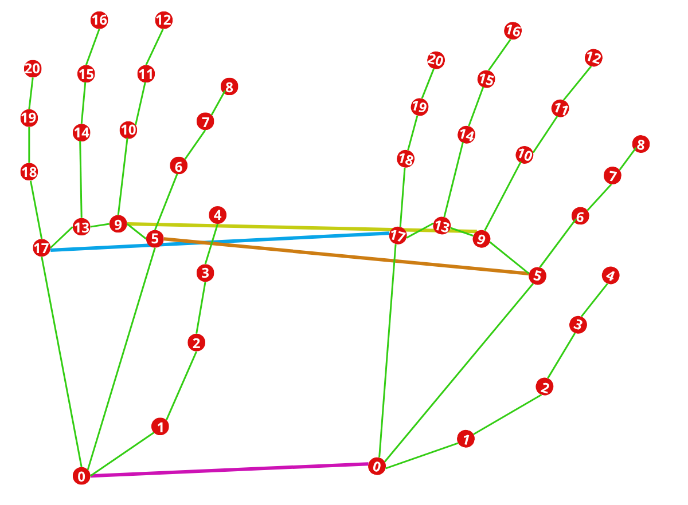

N97000512
Hand Gesture
Recognition
// quanto conta, davvero, imparare dai dati?
riconoscimento da
webcam in tempo reale
«On-device Real-time
Hand Gesture Recognition»
Il progetto riproduce un paper di Google. Il lavoro originale propone un sistema di riconoscimento gesti on-device da una singola camera RGB: MediaPipe Hands stima 21 keypoint della mano, poi un classificatore decide il gesto lavorando sulla geometria, non sui pixel. Per restare in tempo reale, la classificazione gira solo quando una mano è tracciata. Gli autori realizzano due classificatori: uno euristico e una piccola rete neurale.
Pipeline a keypoint
Rilevatore di mani, feature geometriche, classificatore: la decisione avviene solo quando una mano è presente, per ridurre il calcolo.
Classificatore euristico
Stato discreto di ogni dito, disteso, piegato o incrociato, con regole esplicite su angoli e distanze; nessun addestramento.
Rete su keypoint
Rete densa compatta, strati da 50 neuroni, sulle feature 3D della posa, con focal loss per le classi sbilanciate.
Tre modi di riconoscere
lo stesso gesto
A partire da quel lavoro, affronto lo stesso problema con tre filosofie diverse, che ripercorrono l'evoluzione storica della visione artificiale: dalle regole scritte a mano, alle feature progettate dall'uomo ma classificate da una rete, fino alle feature apprese direttamente dai pixel.
Euristico
Regole geometriche esplicite: misuro distanze e angoli della mano e decido con una serie di condizioni. Nessun apprendimento.
Rete su keypoint
Una piccola rete riceve la geometria della mano, feature progettate a mano, e impara da sola le regole di decisione.
CNN
Una rete convoluzionale parte dai pixel grezzi e impara sia cosa guardare sia come classificarlo.
Il Task
Le immagini
Dato un fotogramma con una mano, il sistema deve assegnarlo a una di 15 classi (saluti, conteggi, simboli), compresa la classe NO GESTURE. Il vincolo che guida ogni scelta progettuale è il funzionare in tempo reale su di una webcam.


I quindici gesti
- ☝️POINTING UP: solo l'indice alzato
- ✌️TWO: indice e medio uniti
- 🤟THREE: indice, medio e anulare
- 🖖FOUR: quattro dita, pollice giù
- ✌️VICTORY: indice e medio divaricati
- 👍LIKE: pollice alzato in su
- 👎DISLIKE: pollice rivolto in giù
- 👌OK: pollice e indice a cerchio
- 🤙CALL: pollice e mignolo distesi
- 🤘ROCK: indice e mignolo distesi
- ✊FIST: pugno chiuso
- 🖐️OPEN PALM: mano aperta, dita unite
- ✋STOP: mano aperta, dita larghe
- 🤫MUTE: indice sulle labbra, silenzio
- ∅NO GESTURE: nessun gesto valido
Ogni gesto è una posa statica della mano.
La sfida è distinguerli in tempo reale, anche quando le firme di dita si somigliano.
La pipeline completa

Euristico e rete su keypoint condividono lo stesso input geometrico.
La CNN lavora sui pixel, su un ramo del tutto indipendente.
Tecnologie e librerie utilizzate
Python
Linguaggio scelto. Librerie principali: NumPy per array e algebra, OpenCV per immagini e omografia, scikit-learn per metriche e split, Matplotlib per i grafici.
PyTorch
Framework di deep learning: definizione, addestramento e inferenza della rete su keypoint e della CNN, con precisione mista automatica e scheduler del learning rate.
MediaPipe Hands
Rilevatore di mani di Google: estrae i 21 keypoint della mano che alimentano sia l'euristico sia la rete su keypoint.
Dataset HaGRID
Dataset pubblico (v1) di gesti statici della mano, nella versione lightweight a 512×512. Copre le 15 classi usate qui, suddiviso in train / validation / test con proporzione 80 / 10 / 10.
Prima di tutto: pre-processing
Ogni frame passa per un filtro Gaussiano 5×5 (cv2.GaussianBlur): uno smoothing che attenua il rumore del sensore. È un passo condiviso da tutti e tre i modelli, sui pixel a monte di MediaPipe e della CNN, prima che la pipeline si biforchi.
normalizzo
Il kernel è la matrice di pesi che scorre sull'immagine: ogni pixel diventa la media pesata dei 25 vicini, il centro pesa più dei bordi.
Filtraggio lineareIl kernel gaussiano è un filtro lineare spaziale: smoothing contro il rumore gaussiano. All'aumentare di σ aumenta l'effetto di sfocatura. Utile contro rumori additivi dati da sensore della fotocamera, alte temperature o cattiva illuminazione. È sia isotropo che separabile.
La mano diventa features
Mediapipe Hands estrae da ogni immagine 21 punti caratteristici (keypoints) con le loro coordinate. I 10 angoli di piegamento delle dita vengono calcolati dai punti.
In tutto un vettore di 73 features che descrive la posa, non più i pixel.
| punto | x | y | z |
|---|---|---|---|
| polso | 0.00 | 0.00 | 0.00 |
| punta pollice | −0.24 | −0.50 | −0.04 |
| punta indice | −0.49 | −0.35 | −0.02 |
A sinistra le coordinate dei punti; a destra l'angolo per ogni terna di giunti, con v₁ = Pa − Pb, v₂ = Pc − Pb. 10 angoli in totale.

Formazione dell'immagineLa profondità restituita è solo relativa, quindi la mano è trattata come quasi-piatta (perspective): ipotesi valida vista la distanza tipica dalla camera, ed è ciò che giustifica la correzione via omografia.
Le tre
implementazioni
Ogni dito ha uno stato
- Stato per dito: disteso, piegato o incrociato, dalla distanza normalizzata tra punta e palmo.
- Cinque stati formano una firma che identifica il gesto. Nessun addestramento, decisioni leggibili una per una.
- Quando la firma non basta, si guardano le distanze relative, come divaricazione e pizzico, con soglie fisse scelte a mano.
- Limite: preciso nel caso ideale, fragile con rotazioni e prospettive insolite.
- Trasformazioni per rendere l'immagine standard e uniforme alle altre.
- Un ulteriore limite è la dipendenza da Mediapipe.
La stessa firma può valere per più gesti: TWO e VICTORY hanno identica firma di dita e si separano solo dalla divaricazione indice-medio rispetto al palmo.
Le difficoltà incontrate
- Capire se il pollice è incrociato sul palmo dipende molto dall'angolo di ripresa.
- Più in generale, le immagini hanno mani in posizioni differenti quindi serve un modo per uniformarle e avere keypoints normalizzati.
- Soluzione: la mano viene raddrizzata in vista frontale canonica con una omografia.
- I riferimenti si trovano con la Trasformata di Hough su un immagine template (0-5-9-17). Da qui si ricava H.

Trasformata di Hough e OmografiaLa Trasformata di Hough individua forme circolari note nell'immagine; da queste si stima la trasformazione prospettica tra due piani, l'omografia, che riporta la mano in vista canonica.
Le regole esplicite
| Gesto | Firma dita · P I M A Mi | Soglia / condizione chiave |
|---|---|---|
| FIST ✊ | ●●●●● | tutte e cinque le dita piegate |
| POINTING UP ☝️ | ●●●●● | solo l'indice disteso |
| TWO ✌️︎ | ●●●●● | div. indice↔medio / palmo ≤ 0.6 |
| VICTORY ✌️ | ●●●●● | div. indice↔medio / palmo > 0.6 |
| THREE 🤟 | ●●●●● | indice + medio + anulare distesi |
| FOUR 🖖 | ●●●●● | quattro dita distese, pollice piegato |
| OPEN PALM 🖐️ | ●●●●● | apertura indice↔mignolo / palmo ≤ 1.3 |
| STOP ✋ | ●●●●● | apertura indice↔mignolo / palmo > 1.3 |
| LIKE 👍 | ●●●●● | punta pollice sopra la nocca (y₄ < y₂) |
| DISLIKE 👎 | ●●●●● | punta pollice sotto la nocca (y₄ ≥ y₂) |
| CALL 🤙 | ●●●●● | pollice + mignolo distesi, resto piegato |
| ROCK 🤘 | ●●●●● | indice + mignolo distesi, resto piegato |
| OK 👌 | pizzico | pizzico pollice↔indice / palmo < 0.35 · medio+anulare distesi |
| MUTE 🤫 | pizzico | pizzico pollice↔indice / palmo < 0.35 · medio/anulare piegati |
| NO GESTURE | — | nessuna regola soddisfatta (fallback) |
Firma: ● disteso · ● piegato. Dito disteso se distanza punta→palmo normalizzata > 0.6; pollice incrociato se l'angolo in vista raddrizzata < 0.8
La rete usando i keypoints
Il vettore di 73 features entra in una rete densa: tre strati nascosti da 50 neuroni, uscita su 15 classi. Non vede pixel, ragiona solo sulla forma della mano.
- Attivazioni ReLU tra gli strati: non linearità, evita la saturazione del gradiente, preferita alla classica sigmoide.
- Loss cross-entropy, lo standard per la classificazione multi-classe.
- Ottimizzatore Adam con early stopping con patience 10: Adam è adatto per addestramento in mini-batch; max epoche a 80 con early stopping per evitare overfitting e computazione eccessiva
- Validazione holdout: split fisso 80/10/10; l'accuratezza finale sul test set. Rete riaddestrata.
- 9.565 parametri: l'input è già compatto e informativo, la rete può restare minuscola.
- Limite maggiore la forte dipendenza da mediapipe.
Feature che non si lasciano ingannare
La forza di questo modello è che le feature sono costruite per essere invarianti alle cose che non contano: dove si trova la mano e quanto è grande. Gli angoli di piegamento delle dita restano stabili anche quando la mano è inclinata, perché catturano la posa intrinseca. La rete riceve quindi una descrizione coerente dello stesso gesto.
Coordinate relative al polso
Misurando tutto rispetto al polso e normalizzando sulla dimensione della mano, il gesto resta identico se la mano si sposta nell'inquadratura o è più vicina/lontana dalla camera.
Angoli tra le articolazioni
Gli angoli di piegamento delle dita non cambiano se ruoto la mano: catturano la posa intrinseca, indipendente dall'orientamento.
Descrittore SIFTStessa filosofia dei descrittori classici della visione: normalizzare posizione, scala e orientamento per una rappresentazione robusta. Qui però le feature sono state progettate sulla mano, invece di estrarle automaticamente dall'immagine.
Il fine-tuning
invece che da zero
- La CNN lavora direttamente sull'immagine e impara da sé quali dettagli osservare, senza feature progettate a mano.
- Base è MobileNetV3-Small, architettura leggera e ottima anche per dispositivi mobili, già addestrata su milioni di immagini; viene ri-addestrata interamente sul questo task.
- Fine-tuned per riusare le conoscenze visive di base già pronte, texture e forme, taglia il costo di training e migliora l'accuratezza.
- Ingresso ridotto a 224×224 pixel per aumentare velocità del training e non saturare la VRAM, ~1,5 milioni di parametri.
- Output layer da 1000 a 15 classi.
Cos'è un filtro convoluzionale
- La convoluzione è un filtro lineare: un piccolo kernel scorre sull'immagine e in ogni posizione calcola una somma pesata dei pixel vicini.
- Filtri classici: i pesi del kernel sono fissati a mano. Un kernel gaussiano, per esempio, leviga l'immagine (smoothing).
- In una CNN i pesi del kernel non sono fissati: vengono appresi dai dati durante il training. La rete scopre da sola quali filtri le servono.
- Impilando più convoluzioni si forma una gerarchia di feature: texture e contrasti, poi parti della mano, infine il gesto, un'astrazione via via più complessa appresa dai dati.
Convoluzione: I immagine, h kernel di semi-ampiezza a×b.
Dal classico al modernoI filtri classici come media e gaussiano per lo smoothing sono convoluzioni con kernel scelti a mano.
La CNN usa la stessa identica operazione, ma impara i kernel dai dati invece di progettarli.
Trasformazioni per imparare
a generalizzare
Per non memorizzare le foto ma generalizzare, ogni immagine è perturbata durante l'addestramento (data augmentation).
L'addestramento avviene nel seguente modo:
- Ottimizzatore AdamW con weight decay; funziona come Adam ma è ottimizzato per il deep learning
- Loss cross-entropy con label smoothing 0,1 per evitare che il modello sia troppo "sicuro".
- Scheduler ReduceLROnPlateau sulla val loss per un addestramento più preciso.
- Max 50 epoche, early stopping con patience 5.
- Attivazioni Hard-Swish di MobileNet, ovvero una variante più leggera della sigmoide.
- Validazione holdout 80/10/10.
- Il limite maggiore e difficoltà più grande è l'elevata richiesta di potenza di calcolo.
Dettagli delle trasformazioni
- Ribaltamento orizzontale casuale, il gesto resta valido anche allo specchio.
- Rotazione casuale fino a 15 gradi, per mani inclinate.
- Traslazione e zoom casuali, fino al 10 per cento e scala da 0,9 a 1,1.
- Variazione casuale di colore e luminosità, contro fotocamere e luci diverse.
Analisi
Prestazioni
CNN 94.67% · Rete 90.82% · Euristico 57.61%

Il salto dalla rete alla CNN è piccolo; quello dall'euristico è enorme.
Le matrici di confusione


L'euristico disperde interi gesti su classi sbagliate.
La rete si confonde un po' su dislike.
La CNN concentra quasi tutto sulla diagonale.
Il dettaglio gesto per gesto

L'euristico crolla su alcuni gesti aperti (mano e stop quasi a zero) ma regge su altri; la CNN è la più equilibrata su tutte le classi.
Precision, recall e F1 a confronto
L'accuratezza da sola può ingannare con classi non bilanciate completamente. Le medie macro, che danno lo stesso peso a ognuna delle 15 classi, dicono quanto ogni rete è equilibrata: la precision misura quanti gesti predetti sono giusti, il recall quanti gesti reali vengono trovati, l'F1 ne è la media armonica.
| Metrica (media macro) | Euristico | Rete su keypoint | CNN |
|---|---|---|---|
| Precision | 0.560 | 0.924 | 0.920 |
| Recall | 0.553 | 0.904 | 0.919 |
| F1-score | 0.507 | 0.909 | 0.920 |
| Accuratezza | 55.1% | 90.8% | 92.0% |
Medie macro sulle 15 classi, calcolate sul test set completo di ciascuna rete. Per la CNN ciò include anche le immagini dove MediaPipe fallisce (44.207 campioni): l'accuratezza scende così al 92,0%, leggermente sotto il 94,67% del confronto diretto sulle sole mani rilevate. L'euristico, che sbaglia in blocco i gesti aperti, perde molto più sulla F1 che sulla sola accuratezza.
Convergenza e arresto


Analisi
statistica
Test di McNemar e Cochran's Q
Per valutare statisticamente le prestazioni delle tre reti e, dato che i modelli vengono valutati sugli stessi campioni, sono stati effetuati il test Q di Cochran e il test di McNemar per vedere se ci sono differenze significative.
① Cochran's Q — i tre insieme
Un unico test su tutti e tre i modelli: esiste almeno una differenza? Generalizza McNemar a più classificatori appaiati. Risponde "sì/no" prima di guardare le coppie.
② McNemar — coppia per coppia
Acclarata la differenza, si individua quali coppie differiscono. Guarda solo i disaccordi: chi indovina quando l'altro sbaglia.
Il verdetto in due passi
① Cochran's Q
I tre modelli non sono equivalenti: almeno uno è diverso. Su 39.765 campioni con mano rilevata.
② Le coppie poi confermano l'ordine: ogni p-value è praticamente nullo → CNN > rete > euristico è solido.

Analisi temporale
e spaziale
Il "senza parametri" è il più lento

L'euristico (8.87 ms) paga le pesanti operazioni geometriche su CPU; la rete su keypoint (0.27 ms) riduce tutto ad algebra lineare; la CNN (4.48 ms) resta competitiva sfruttando la GPU.
Robustezza e dipendenza
dal rilevatore e
il miglior compromesso
- NN ed Euristico dipendono dai landmark MediaPipe
- Su ~4.443 immagini MediaPipe fallisce (occlusioni, blur, angoli estremi)Quei due modelli non possono nemmeno tentare la classificazione.
- La CNN legge i pixel grezzi e classifica comunqueSupport test: CNN 44.207 vs NN 39.764.
- La rete neurale è quasi accurata come la CNN, ma molto più veloce e leggera, ideale per il tempo reale.

MediaPipe fallisce su immagini degradate (rumore impulsivo, motion blur). Altri filtri di smoothing (mediano o conservativo) come pre-processing potrebbero recuperarle. La CNN è intrinsecamente più robusta perché apprende feature tolleranti al degrado.
La mia implementazione vs
il paper originale
Cosa ho cambiato e aggiunto
| Paper (Google 2021) | Il mio progetto | |
|---|---|---|
| Classificatori | 2, euristico e rete | 3, con la CNN sui pixel |
| Gesti | 6 supportati (21 nel dataset) | 15 (14 + NO GESTURE) |
| Dataset | in-house privato | HaGRID pubblico |
| Feature della rete | 3D world-metric | landmark 2D rel. al polso + 10 angoli |
| Loss della rete | focal loss (classi sbilanciate) | cross-entropy |
| Hand tracker | MediaPipe migliorato (ASL, 3D metrico) | MediaPipe standard, non ri-allenato |
Risultati: paper vs miei
| Euristico | Rete su keypoint | CNN | |
|---|---|---|---|
| Paper, recall medio | 44.4% | 87.9% | assente |
| Mio, recall macro | 55.3% | 90.4% | 91.9% |
| Mio, F1 macro | 0.507 | 0.909 | 0.920 |
| Mia accuratezza | 57.6% | 90.8% | 94.7% |
Meglio, ma non totalmente confrontabiliLa riproduzione regge e migliora rispetto al paper. C'è un aumento del 3% per la rete neurale e un miglioramento di ~11% sull'euristico. Inoltre, la CNN supera entrambi i modelli (come ci si poteva aspettare). Il confronto va letto in modo qualitativo: dataset diverso, gesti diversi, mediapipe standard.
Dal vivo
Guardiamoli lavorare


Sintesi
Tre modelli, tre compromessi
| Euristico | Rete su keypoint | CNN | |
|---|---|---|---|
| Paradigma | Regole geometriche | Feature a mano + rete | Feature apprese |
| Parametri | 0 | 9.565 | ~1,5 M |
| Peso | 0 MB | 0.04 MB | 5.98 MB |
| Latenza | 8.87 ms | 0.27 ms | 4.48 ms |
| Accuratezza | 57.6% | 90.8% | 94.7% |
| Dipende dal rilevatore di mani | Sì | Sì | No |
Imparare paga,
ma la geometria resiste
Il passaggio dalle feature progettate a mano a quelle apprese migliora nettamente le prestazioni, ma le feature geometriche restano sorprendentemente competitive ed efficientissime.
Rete su keypoint
Il miglior compromesso per il tempo reale: un ordine di grandezza più veloce e ~150× più leggera della CNN, con accuratezza vicina.
CNN
La più accurata e robusta: unica indipendente dal rilevatore di mani, al prezzo di più memoria e di una GPU.
Euristico
Totalmente interpretabile e a costo zero di training, ma fragile e, a sorpresa, il più lento.
Sviluppi futuri
Recuperare i fallimenti
Filtri di riduzione del rumore prima del rilevatore di mani, per salvare le immagini degradate oggi perse.
CNN più leggera
Compressione e ottimizzazione del modello per il deployment su dispositivi a basso consumo.
Modello ibrido
Usare la veloce rete su keypoint come default e ricadere sulla CNN solo quando il rilevatore di mani fallisce: velocità e robustezza insieme.
Profondità reale
Calibrare la camera per passare da mano quasi-piatta a una stima 3D completa della posa.
Bibliografia
- G. Sung, K. Sokal, E. Uboweja, et al. «On-device Real-time Hand Gesture Recognition». Google Research, arXiv:2111.00038, 2021.
- F. Zhang, V. Bazarevsky, A. Vakunov, et al. «MediaPipe Hands: On-device Real-time Hand Tracking». arXiv:2006.10214, 2020.
- A. Kapitanov, K. Kvanchiani, A. Makhlyarchuk, et al. «HaGRID, HAnd Gesture Recognition Image Dataset». arXiv:2206.08219, 2022. github.com/hukenovs/hagrid
- A. Howard, M. Sandler, G. Chu, et al. «Searching for MobileNetV3». ICCV, 2019. arXiv:1905.02244.
- A. Paszke, S. Gross, F. Massa, et al. «PyTorch: An Imperative Style, High-Performance Deep Learning Library». NeurIPS, 2019.
- Q. McNemar, «Psychometrika», 1947 · W. G. Cochran, «Biometrika», 1950, test statistici per dati appaiati.